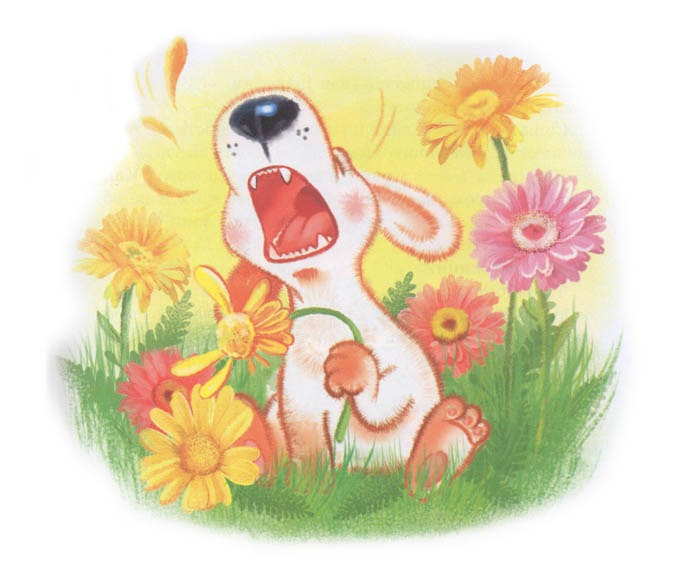

Умная собачка Соня. Продолжение.
Андрей Усачев
Как собачка Соня нюхала цветы
Больше всего на свете собачка Соня любила нюхать цветы. Цветы были такие душистые и так приятно щекотали в носу, что, понюхав их, Соня сразу же начинала чихать. Чихала она прямо в цветы, отчего они пахли и щекотали еще сильнее, а собачка Соня чихала еще сильнее… и так продолжалось до тех пор, пока у Сони не начинала кружиться голова или не облетали все цветы.
— Ну вот, — сердился Иван Иваныч. — Опять распотрошила весь букет!
Соня с грустью смотрела на осыпавшиеся лепестки, тяжело вздыхала… Но ничего поделать с собой не могла.
К разным цветам Соня относилась по-разному. Кактусы, например, она не любила. Потому что хотя они и не облетают, но, когда чихаешь в кактусы, они больно вонзаются в нос. Очень нравились ей сирень, пионы и георгины.
Больше же всего собачка Соня любила чихать на одуванчики. Набрав их побольше, она усаживалась где-нибудь на скамейке — и пушинки летели по двору как снег.
Это было необыкновенно красиво: лето на дворе — и снег идет!
И становилось на улице вроде бы даже немного прохладнее!
И Иван Иваныч сразу же загонял Соню домой, боясь, что она простудится.
Он вообще мало чего понимал в красоте.
И цветы домой приносил редко.
К счастью, перед домом, прямо напротив их окна, была разбита большая клумба пионов. И собачка Соня частенько забиралась в нее с головой — и чихала в свое удовольствие. Но однажды ее подкараулил дворник Седов…
— Ага! — закричал он. — Так вот кто портит мои пионы! — И долго гонялся за собачкой Соней с метлой.
Соня пожаловалась Ивану Иванычу, но тот и не подумал заступиться за нее.
— И вообще, — сказал он, — мне не очень нравится, когда ко мне приходят гости, а ты начинаешь чихать в их цветы. Воспитанные собачки так не делают! Чихать нужно не в цветы, а в носовой платок!
Собачка Соня представила, как она будет глупо выглядеть, сидя в цветах с носовым платком! — но ничего не ответила.
А Иван Иваныч и в самом деле купил ей носовой платок.
И теперь, когда к ним приходили гости, Соне приходилось чихать в этот платок.
Но если дома или на улице поблизости никого не было, собачка Соня чихала не в платок, а в своё удовольствие. Потому что так значительно приятнее!
Бинокль
Как-то днем, когда хозяина не было дома, собачка Соня сидела на подоконнике и рассматривала улицу в бинокль. (Это такая штука, с одной стороны которой всё близко-близко, а с другой — далеко-далеко.)
То, что ей нравилось, Соня рассматривала с близкого конца, а то, что не нравилось, — с далёкого.
Очень ей понравился, например, один прохожий, в сумке у которого лежали сосиски. Сосиски были такие большие и прошли так близко от неё, что у Сони даже слюнки потекли…
Ещё ей понравился киоск с мороженым на углу и большой куст сирени.
А вот дворник Седов, подметавший неподалеку тротуар, Соне не понравился.
Еще больше ей не понравился дворников кот, нахальный и огромный как тиф…
Но умная Соня быстро перевернула бинокль — и дворник оказался размером с кота, а кот — размером с муху.
Затем Соня посмотрела вниз и от испуга чуть не выронила бинокль: земля была далеко внизу — как будто собачка Соня сидела не в квартире, а в космической ракете…
Но умная Соня снова перевернула бинокль — и земля так приблизилась, что до нее можно было лапой достать.
— Пойду-ка я погуляю, — обрадовалась Соня. Шагнула… и полетела с третьего этажа — прямо на клумбу с пионами.
«Странно, — подумала Соня, вылезая из клумбы. — Наверно, когда я падала, он перевернулся…»
Соня снова посмотрела в бинокль — и в двух шагах от себя увидела огромного дворника Седова, замахивающегося на нее огромной метлой…
— Ай-ай-ай! — закричала Соня и бросилась наутёк.
Прибежав домой, она повесила бинокль на стену и больше не брала.
«Слишком опасная это вещь, — думала собачка Соня. — С какой стороны ни посмотришь — одни неприятности!»
Мухи
По комнате летали большие наглые мухи и никак не давали собачке Соне уснуть. Соня отмахивалась от них и лязгала зубами, но мухи не отставали.
— Ну погодите! — пригрозила им Соня. Она отправилась в прихожую и сняла с гвоздя мухобойку. (Это такая палка с пришлёпкой, которой наказывают мух.)
Соня решила начать с кухни. Большая толстая муха сидела и почесывалась на стакане.
— Р-раз! — сказала собачка Соня. И толстая муха со звоном упала на пол.
Вторая муха разгуливала по сахарнице.
— Дв-ва! — сказала Соня. И муха вместе с сахарницей свалились под стол.
Третья муха сидела на портрете дедушки (не Сон иного, конечно, дедушки, а Иван Иваныча, но Соне это тоже не понравилось).
— Тр-ри! — сказала собачка Соня.
Потом Соня сказала «Четыре!»
Потом — «Пять!»
Когда Соня сказала «Шесть!», с работы пришел хозяин.
— Это что такое? — удивился он, увидев разбитый стакан.
— Муха, — сказала собачка Соня.
— А это? — показал он на сахарницу.
— Тоже муха, — сказала Соня.
— И это тоже муха? — спросил Иван Иваныч, поднимая упавшего дедушку.
— И я немножко, — созналась собачка Соня из-под дивана.
— Ну вот и убирай всё вместе с мухами! — Иван Иваныч принёс из ванной швабру (это такая штука, которой выметают из-под дивана мусор и маленьких собачек) — и ушел гулять один.
«Несправедливо все-таки получается, — думала Соня, подметая пол. Мух вон сколько… а убирать всё мне одной!»
Продолжение следует